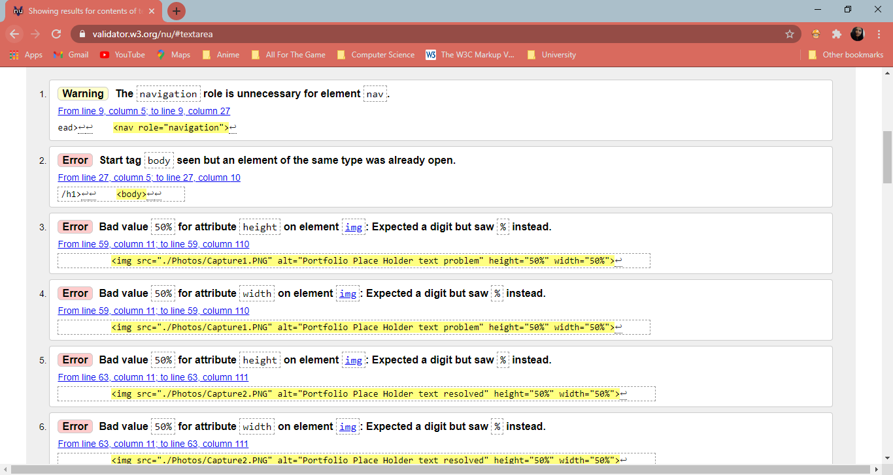

Before starting the website, I wanted to choose the colour scheme as it will help determine the outcome of the website. To do this, I researched the colour schemes in websites. What I found out to stick to three colours, one primary colour and two secondary colours. The website that I learned this from is here.
I had also used a colour generator to help choose the colours that I will use on my website using the ‘Coolers’ website. The colour palette that the generator gave me is here.
The first thing that I had to do was to make all the webpages the same, to do this I had created the five webpages. In the style.css file, I had written the code for the background and the text.
One problem that occurred was the github and linked in images in the index webpage were on different lines however, I wanted them on the same line, standing next to each other. Originally, I had written the code in the index html file, however, I realised that I should write the code for the columns in the css. This had solved the problem of the icons in different lines.
Another problem that had occurred was the texts that said 'Place Holder' and then the number of which the
placeholder was for, was on the left of the screen when I had wanted the writing to be under the appropriate
icon. The screenshot below shows the problem:
Here is the webpage when the problem was fixed.
Index Page:
Portfolio Page:
CV Page:
Contact Page:
Site Report Page:

1. Terwan, E., 2015. Pure CSS Hamburger Fold-Out Menu. [online] Codepen. Available at:
here [Accessed 17 January 2021].
2. www.w3schools.com. (n.d.). How To Create a Portfolio Gallery. [online]
Available at:here
[Accessed 17 January 2021].
3. W3schools.com. (2019). How To Align Images Side By Side. [online] Available at:
here [Accessed 17th
January 2021]